Requisitos previos
Navegador web:
Asegúrate de tener un navegador moderno (Chrome, firefox, safari, etc.) para una mejor experiencia.
Conexiòn a internet:
Necesitas acceso a internet para interactuar con el sistema.
Empieza tus investigaciones, resolver tus dudas o descubrir nuevas cosas.
utilizaremos un ejemplo basico acerca de:
como podemos estudiar para un examen de matematicas si no retengo bien la informacion en recomendacion de la IA
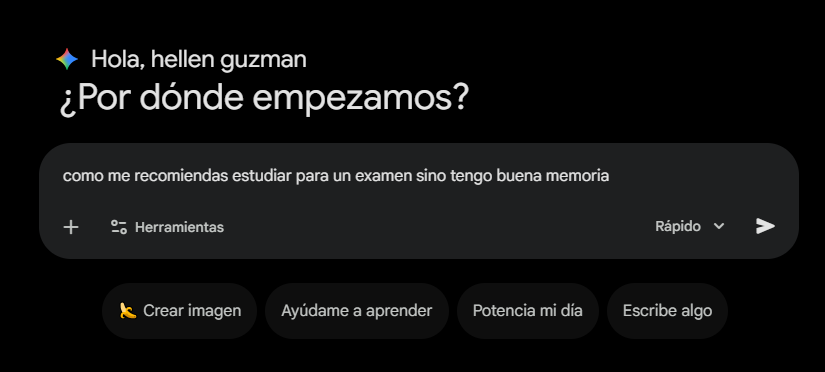
Ponemos el texto para que nos de una muy buena recomendacion y presionamos Enter
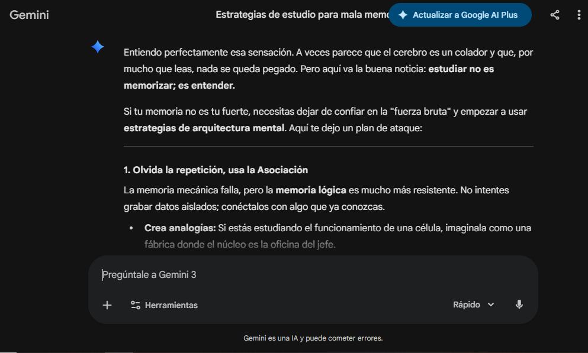
Como podemos ver, lo que nos saldra ya serà la mejor recomendacion de la IA.
Realizar preguntas por el microfono
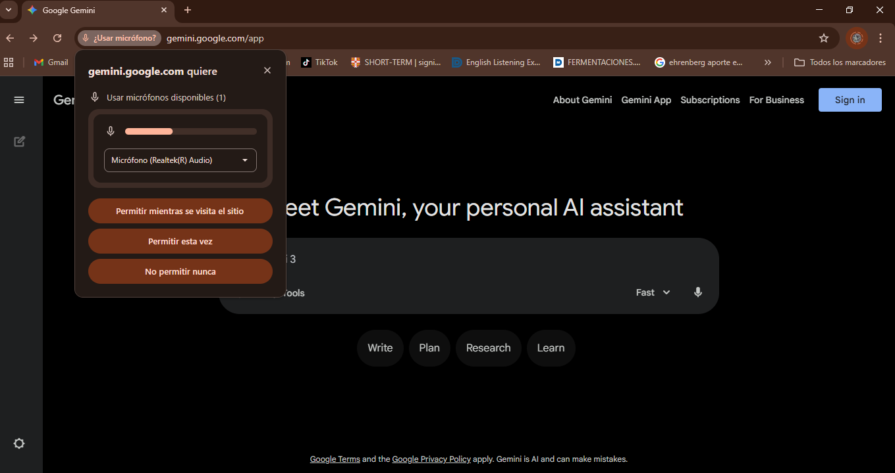
.Al darle click a la imagen del microfono, automaticamente debemos de darle acceso
a nuestro microfono.
le damos a "permitir esta vez" o "permitir mientras se visita el sitio",
le recomendamos poner "mientras se visita el sitio" sino,
se vera obligado a que cada vez que usted quiera preguntarle
algo a Gemini cuando vuelva a iniciar
debe darle el permiso y es estedioso hacer eso.
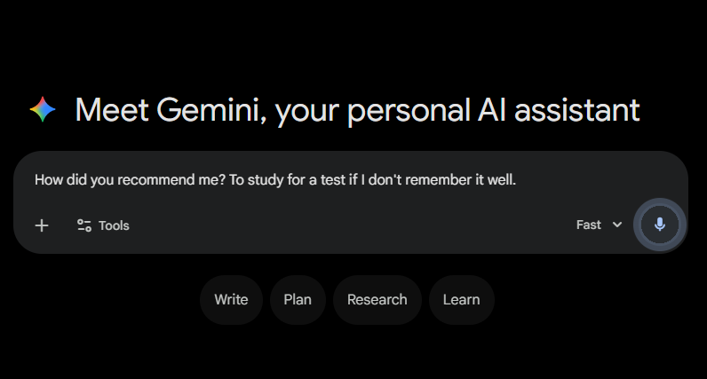
Como se puede ver en pantalla, nos aparece lo que nosotros digamos,lo cual
esta bien para momentos donde no podemos permitirnos escribir y necesitamos ayuda rapida.
Por recomendacion, diria que mejor redacte usted mismo la pregunta
ya que el microfono puede estar dañado, no pronunciamos bien o nuestro
google esta en otro idioma.
Inicio de sesion
Gemini tiene muchas herramientas, pero ¿Còmo podemos utilizarlas si aun no hemos iniciado sesion?
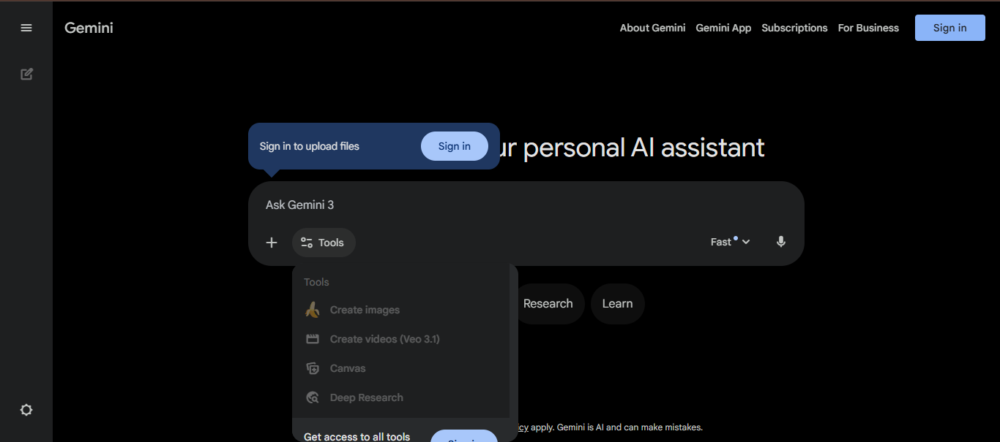
Cliqueamos el + y la opcion tools podemos ver
podemos ver en pantalla todos los tipos de herramientas que tiene gemini pero que no podemos utlizarlos porque aun no hemos iniciado sesion.
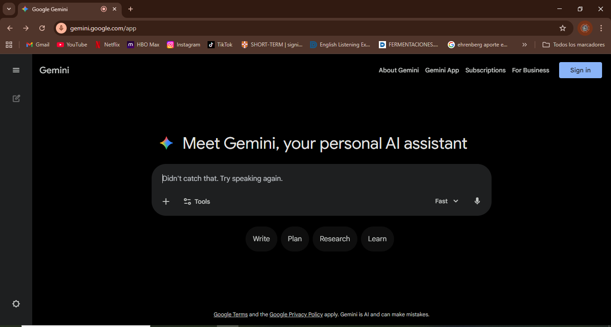
Presionar el boton "sing up" o "iniciar sesion".
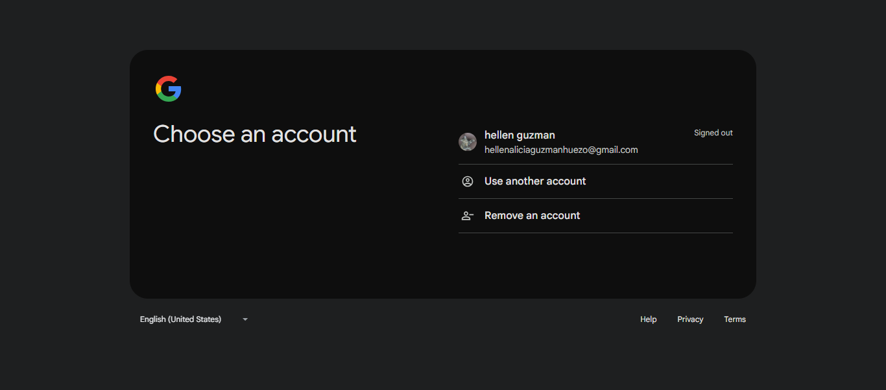
Escogemos la cuenta que utilizaremos para Gemini, al tenerla escogida nos enviara a otro apartado.
Otorgar nuestra contraseña de GOOGLE.
es muy importante que se haga de esta manera ya que si ponemos otra contraeña
pensando que es para la cuenta gemini especfiicamente nos darà error.
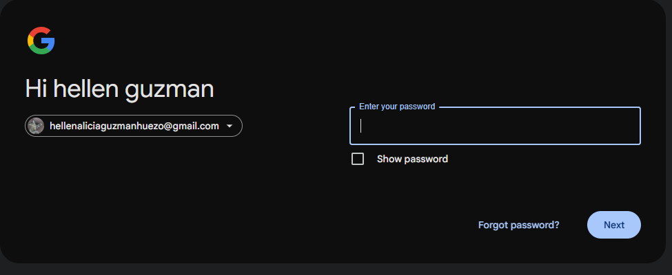
Herramientas desbloqueadas
Al ya haber iniciado sesion nos enviarà de nuevo a la pagina principal pero ahora
con las herramientas desbloqueadas.
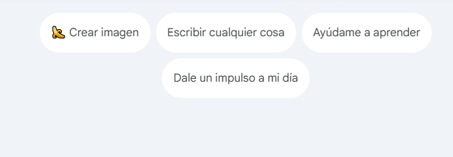
Empezar a interactuar con las herramientas
Uitlizaremos un ejemplo donde queremos borrar el fondo de una foto y ponerlo en negro o blanco.
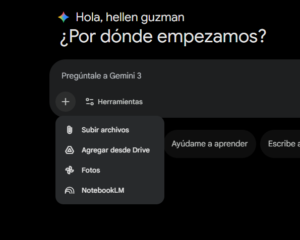
Presionamos en la opcion "subir archivos" y nos enviara a explorador de archivos
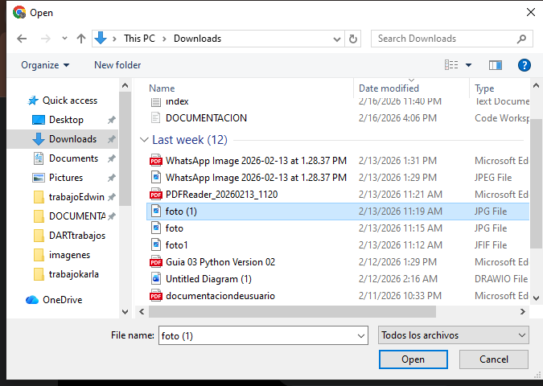
Escogemos el archivo que en esta caso sera "fotos" y solamente lo cliqueamos y damos a aceptar.
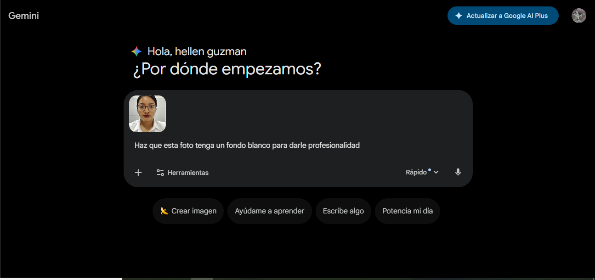
Ahora, ponemos el texto "Haz que esta foto tenga un fondo blanco para darle profesionalidad"
y asi la IA generarà la imagen en fondo blanco o negro, incluso podemos quitarle el fondo simplemente.
Le recomendamos apliamente que utilice las IAs de forma responsable para fines educativos.
IMPORTANTE
Al no tener la opcion premium, siempre tendremos un limite en los chats por lo cual podemos acceder
a la opcion plus al hacerle click a la parte superior de la pantalla donde dice "Actualizar google Al Plus"
esto contiene muchos beneficios, pero es opcional.